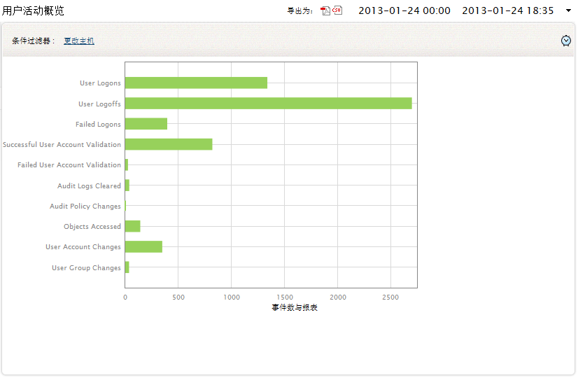
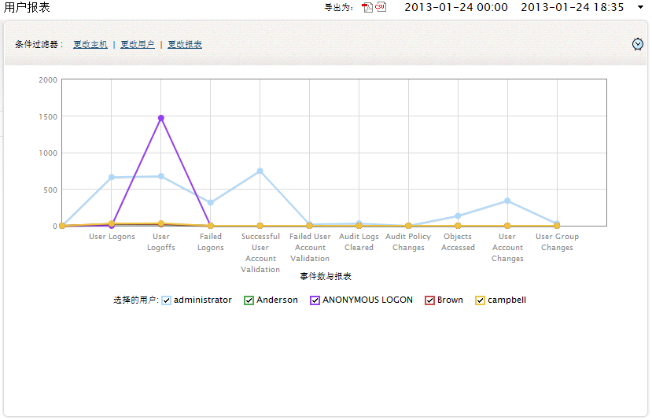

用户活动（PUMA）报表
要查看用户活动报表，可以通过以下菜单实现：
报表页签下的用户活动报表部分，列出了基于主机、用户和报表的用户活动事件。
用户活动 - 概览
这个报表可以让您知道相关主机的用户活动信息。 您可以使用条件过滤器来修改主机。选择条件过滤器：修改主机来查看选择的主机的概览图表。这个图标绘制了事件数和报表的相关信息。

用户活动报表：
- User Logons
- User Logoffs
- Failed Logons
- Successful User Account Validation
- Failed User Account Validation
- Audit Logs Cleared
- Audit Policy Changes
- Objects Accessed
- User Account Changes
- User Group Changes
用户报表
这个报表可以让您知道相关用户活动事件数量的信息。您可以使用过滤条件修改主机，用户和报表。选择条件过滤器：更改主机/用户/报表来查看选择的主机、用户或报表的概览图表。这个图标绘制了和报表的相关事件数信息。

用户报表：
- User Logons
- User Logoffs
- Failed Logons
- Successful User Account Validation
- Failed User Account Validation
- Audit Logs Cleared
- Audit Policy Changes
- Objects Accessed
- User Account Changes
- User Group Changes
|